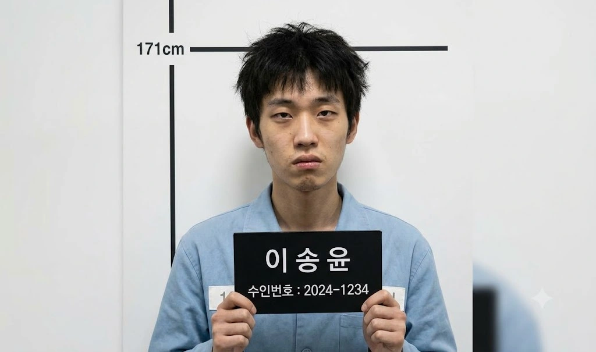

| 이송윤 (李松潤) Lee Song-yun | |
|---|---|
 | |
| 출생 | 2004년 6월 4일 (만 22세) 효빈광역시 동구 덕현동 |
| 거주지 | |
| 현재지 | 효빈광역시 안천구 융문동 203 (효빈교도소[1]) |
| 국적 | 대한민국 |
| 신체 | 171cm[2], 60~65kg 추정[3] |
| 가족 |
부모, 여동생(2005년생) (※ 아버지 전직 기자, 조작 기사로 파면 및 파산. 여동생은 이들의 개지랄을 공론화하며 더불어민주당 입당 및 영구 의절) |
| 학력 |
족포초등학교 (졸업) 내성중학교 (졸업) 덕현고등학교 (졸업) 삼선대학교 (사학 / 영구 퇴학(출교))[4] |
| 병역 | 현역병 소집 대상자 (3급)[5] → 병역면제(제적)[6] |
| 종교 | 기독교 (부활제일교회(...) 신자) |
| 별명(멸칭) | 기레기 주니어, 망상병 환자, 아빠 빽 호소인, 언론 장악 조무사, 벌레 |
| 범죄 및 형량 |
징역 19년 + 위치추적 전자장치 10년 부착 (15년: 통신매체이용음란, 협박, 강요미수, 상해(과실치상), 강제추행 미수, 접근금지 명령 위반, 법정모독, 모욕, 명예훼손 및 무고, 특수공용물건 손상 미수, 아동복지법 위반 + 4년: 법정모독 및 공직자 명예훼손 별건 기소) |
| 출소일 | 2043년 1월 4일 ()[7] |
조창렬, 전개욱과 함께 효빈시 역사상 최악의 흑역사를 장식한 앰생 트리오의 일원이자, 기자 아빠 빽만 믿고 깝치다 가문 전체를 멸문지화로 몰아넣은 전설의 어그로꾼.
고노애의 초등학교·중학교 동창으로, 어린 시절 노애에게 인간에 대한 환멸을 심어준 최악의 학폭 가해자다. 삼선대학교 사학과에 재학하며 평범한 대학생 행세를 했으나, 실상은 조창렬 못지않은 극우 혐오 성향과 반사회적 인격장애를 가진 구제 불능의 쓰레기다. 고노애 권력형 성범죄 사태 당시 조창렬, 전개욱과 함께 집단 성희롱과 2차 가해에 앞장섰다.
특히 식당 화장실 앞에서 기자 아빠의 빽을 믿고 언론 장악을 운운하며 허세를 부리다, 공공학과 브레인 유채나가 폰 녹음기를 켜둔 것도 모른 채 아빠의 더러운 언론계 은폐 비리와 룸살롱 로비 의혹을 실시간으로 자백해버리는 경이로운 능지처참을 보여주었다. 결국 이 자폭 한 방으로 기레기 아빠는 메이저 언론사에서 파면당해 파산했고 집안은 풍비박산 났으며, 자신 역시 징역 19년을 선고받고 청춘을 통째로 압수당했다.
171cm로 대한민국 남성 평균에는 약간 못 미치지만, 조창렬 패거리(159cm, 168cm) 중에서는 그나마 가장 크다는 이유 하나만으로 쓰레기 같은 우월감을 느끼던 인간 조무사다. 3류 찌라시에서 메이저 언론으로 세탁해 들어간 기자 아빠의 빽을 믿고, 학창 시절 온갖 양아치 짓을 저지르고도 언론의 힘으로 무마되어 법을 우습게 아는 썩어빠진 사고방식을 갖게 되었다.
그 역시 패거리들과 마찬가지로 효빈시 외곽에 위치한 이단 시비가 끊이지 않는 '부활제일교회'의 신자다. 예배 시간에 특정 정당 지지를 강요하고 반대 세력을 '빨갱이 사탄'으로 규정하는 광신도 집단으로, 이송윤은 어릴 적부터 세뇌당하며 여성과 사회적 약자에 대한 극도의 혐오를 키웠다.
그는 병무청 신체검사에서 현역병 소집 대상자 (3급) 판정을 받았다.[5] 겉보기엔 멀쩡하게 군대를 갈 것 같지만, 실상은 아빠의 기레기 인맥을 동원해 온갖 정신병자 코스프레를 시도하다 병무청 의사에게 간파당해 현역으로 억지 배정된 찌질한 꼼수의 결과물이다. 훗날 19년형 확정으로 병역 면제 및 영구 제적 처분을 받아 결국 그토록 원하던 군 면제를 '합법적'으로 쟁취(?)하게 된다.[6]
이송윤은 공부는 못했지만, 기자 아빠의 인맥을 동원한 요상한 포트폴리오 조작 덕분에 삼선대학교 사학과에 합격했다. 그러나 이 사실은 훗날 이송윤이 고노애 사태에 연루되었을 때 최악의 역풍으로 돌아온다.
효빈시의 절대 권력자이자 김시연의 아버지인 김성민 국회의원이 다름 아닌 삼선대 출신이었던 것이다. 이 쓰레기가 모교의 후배라는 사실을 알게 된 김성민 의원은 "감히 삼선대의 숭고한 결의와 명예를 말아먹을 짐승 새끼가 학교에 있느냐"라며 극대노했다. 결국 김 의원의 팩트 폭격과 공론화에 삼선대학교 본부마저 격노하여, 사립대학임에도 불구하고 극히 이례적이고 신속한 행정 절차를 밟아 그를 '영구 퇴학(출교)' 시켜버렸다.[4]
이송윤은 고노애에게 인간에 대한 환멸을 처음 심어준 만악의 근원이다.
이 중심 사건 외에도 이송윤의 악랄하고 비열한 면모를 여실히 드러내는 5가지 추가 패악질이 존재한다.
이송윤은 고노애 사태 초기에는 직접 등장하지 않는다. 그러나 식당 화장실 앞 복도 사건부터 등장하여 본인 스스로 지옥으로 다이빙하는 완벽한 자폭을 시전한다.
식당 화장실 앞 복도에서 고노애와 강하애가 안고 우는 모습을 전개욱과 함께 발견한 이송윤. 어린 시절의 반짝이던 외모는 온데간데없이 역변하여 흔남이 된 상태였다. 그는 화장실 벽에 기대어 노애의 몸을 역겹게 위아래로 훑어보았다.
"오~ 여기서 질질 짜고 있었네? ㅋㅋㅋ 지랄들을 한다, 못생긴 년들이."
"야, 고노애. 너 어릴 땐 진짜 보기 싫은 뚱땡이더니 살 빼니까 몸매 좀 많이 좋아졌다? (...) 피 토할 정도로 먹고 토하면서까지 네 그 몸매를 아등바등 유지하려고 하는 꼴을 보니까 묘하게 좀 꼴리는데? 야, 내 마음이 좀 바뀌었어. (...) 너, 나랑 한 번 사귀자."
분노한 오이슬이 소주병을 들고 나타나자, 그는 오히려 관종이라 비웃으며 5명 단체 성관계를 제안하는 짐승만도 못한 망발을 내뱉었다.
"이 미친년은 또 뭐야? 나잇값 못하게 애새끼처럼 왜 대가리에 리본을 쳐 묶고 지랄이야? (...) 야, 너도 따라와. 우리 3명에서 하자. 아니지, 저기 뒤에 금발(하애), 너도 와라. 4명, 아니 노애까지 5명에서 단체로 아주 질펀하게 놀자."
"이 씨발년이, 어디 한 번 쳐볼 테면 쳐봐 ㅋㅋㅋ 이 년들이 몸매는 봐줄 만해서 내가 특별히 이 잘생긴 얼굴 좀 맛보게 해준다니까 비싼 척을 하네. 아주 가소로운 년들. 그럼 억지로 끌고 가서 데리고 노는 수밖에."
주성우가 튀어나와 앞을 가로막자 1년 꿇은 형님이라 비아냥거리며 성우의 어깨를 밀쳤다.
"아이고~ 우리 1년 꿇은 형님 아니신가 ㅋㅋㅋ 여자들 치마폭에 싸여서 노니까 아주 살맛 나지? 야, 나 하나만 좀 줘라. 아니, 어차피 내가 힘으로 데려갈 테니까 넌 신경 끄고 저리 꺼져, 이 꿇은 새끼야 ㅋㅋㅋ"
"씨발, 한 번 해봐 병신아 ㅋㅋㅋ 머리 나빠서 1년이나 꿇은 주제에 어디서 가오를 잡아. 왜, 너 혼자 저 년들 6명 다 따먹고 하렘 차리려고? 너 같은 병신이? ㅋㅋㅋ"
김시연이 서늘하게 얀데레 모드로 경고했음에도, 눈치 없이 아빠가 기자라며 가짜 뉴스로 집안을 조져버리겠다고 발악했다.
"미친년이 돌았나! 야, 내가 내일 언론에 다 제보할 거야 씨발련들아! 너희들 다구리 깠다고! 야, 우리 아빠 기자야 이 씨발련들아!! 김시연, 니 애비 김성민? 내가 우리 아빠한테 말해서 있지도 않은 스캔들 만들어서 니 집안 다 조져버릴 수 있다고!!!!!!!!!!!!!! 어차피 요즘 개돼지 같은 사람들은 자극적인 가짜뉴스 뿌리면 다 욕하고 까기 마련이라고 이 병신들아 ㅋㅋㅋㅋㅋ!!"
결국 노애는 사색이 되어 비틀거리고, 이슬/성우/하애/시연 등 친구들이 완벽한 방어벽을 구축하며 극대노하는 가운데 식당 사장님이 경찰을 불렀다.
전개욱의 아빠(경찰 간부)가 김시연 앞에서 무릎을 꿇고 벌벌 떠는 식당 복도 상황. 경찰 간부조차 무너지는 마당에, 이송윤은 눈치 없이 비릿한 웃음을 흘렸다. 자신의 아빠(기자) 빽을 맹신하며 짝다리를 짚고 오만방자하게 턱을 치켜들었다.
"야, 전개욱! 쫄지 마 병신아. 저년들이 여기서 아무리 아가리를 털고 법 들먹이며 지랄해봤자, 결국 언론에서 안 써주면 그만이야!"
"야, 김시연. 니 애비가 국회의원이면 뭐 해? 우리 아빠가 기자라니까? 내가 우리 아빠한테 말해서 기사 싹 다 덮어버리고, 역으로 '국회의원 딸내미가 동기들 다구리 까고 갑질했다'고 프레임 짜서 기사 내보내면 니들이 어쩔 건데? 어차피 요즘 개돼지들은 진실이 뭔지 관심 없어! 기자가 펜대 굴려서 자극적으로 써주면 다 믿는다고! 언론에서 안 다뤄주면 니들이 짖어댄 증거고 나발이고 다 묻히는 거야 ㅋㅋㅋㅋ 해볼 테면 해봐 씨발련들아!"
그러나 이 비열한 언론 장악 발언에 분노한 주성우에게 멱살이 잡혀 발이 반 뼘이나 허공에 들린 채 켁켁거리며 버둥거렸다. 이어 김시연이 아빠의 실체가 그저 '지역 찌라시 신문사 데스크'임을 팩트로 폭로하고, "조중동 국장들을 움직여 네 아빠 신문사를 압수수색하게 만들겠다"고 선언하자, 그제야 자신이 건드린 권력의 크기를 깨닫고 시체처럼 새하얗게 질려버렸다. 다리가 풀려 오줌을 지릴 듯 사시나무 떨듯 떨기 시작했다.
"(아빠에게 잡혀가며) 이거 놔!! 우리 아빠한테 전화할 거라고!! 놔아아악!!"
수갑이 채워지기 전, 극한의 위기 상황에서도 굴하지 않고 궤변을 늘어놓는 이송윤의 눈치와 주제 파악 능력은 인간의 궤도를 벗어났다. 꼿꼿하게 고개를 쳐들고 미친 듯이 낄낄거리며 김시연의 말을 '언정 유착'으로 몰아갔다.
"하하하! 아, 존나 웃기네. 야, 김시연. 네가 지금 메이저 언론사 국장들 들먹였냐? 응~ 그것도 결국 '언정 유착'이잖아 ㅋㅋㅋㅋ 네 애비랑 조중동 국장들이랑 호형호제한다고? 그럼 뻔하지 ㅆㅂ, 또 어디 룸살롱이나 기어들어가서 여자 끼고 술 쳐먹다가 알게 된 썩은 인맥이겠지 ㅋㅋㅋㅋ!"
"우리 아빠가 누군 줄 알아? (...) 지금은 이 지역 메인 언론인 '효빈일보'에 정식으로 들어간 핵심 기자야 ㅋㅋㅋㅋ! 어디서 찌라시 데스크라고 날조를 쳐?"
"그리고 조선일보? (...) 너네 같은 좌파 새끼들은 답이 없다는 거야 ㅋㅋㅋㅋ 에휴 ㅋㅋㅋㅋ 그래, 어디 한 번 언론사랑 대놓고 유착됐다고 기사 내보내 보든가 ㅋㅋㅋㅋ 못 할 거면 아가리 닫고 나랑 자자고."
바닥에 엎드린 동네 형 전개욱과 그의 아빠를 향해 경멸의 시선을 던지고 패륜적인 반말을 쏟아냈다.
"야, 전개욱. 형 같지도 않은 병신 새끼야. 느그 아빠도 참 개병신이다 ㅋㅋㅋ 고작 국회의원 이름 하나 들었다고 쫄아서 아들한테 수갑을 채워? 에휴, 찌질한 새끼. 넌 앞으로 나한테 형 대접받을 생각 말고 반말 까지 마라, 씨발련아."
시연에게 '우파라면서 좌파 언론사에 들어간 논리적 오류'로 조롱당하고 불법 녹음 경고를 받자, 분노로 얼굴이 시뻘게졌다. 거칠게 욕을 내뱉으며 폰을 꺼내 시연에게 성희롱성 폭언을 날리고 아빠에게 전화를 걸었다.
"이 씨발년이 진짜 끝까지 주둥이를 놀리네... 좋아, 넌 내가 어떻게든 무릎 꿇려서 먹어줄게 ㅋㅋㅋ 이런 귀한 집 오만한 딸내미는 어떻게 울면서 깔릴지 존나 탐이 난단 말이지..."
전화를 받고 만취한 아빠가 식당에 난입해 특종 운운하며 허세와 날조를 쏟아내자, 이송윤은 아빠의 기레기다운 패악질과 뇌내망상(자신이 좌파 언론을 내부 폭파시킬 보수 요원이라는 등)을 굳게 믿고 끝까지 실실 쪼개며 거들먹거렸다. 그러나 결국 인내심이 바닥난 경찰 간부(전개욱의 아빠)에 의해 두 팔이 뒤로 꺾이고 수갑이 채워져 억지로 순찰차에 욱여넣어졌다.
이송윤이 경찰서 유치장으로 끌려간 사이, 아들의 호출을 받고 달려온 기레기 아버지의 뇌내망상과 파멸 과정이다.
만취 상태로 식당에 난입한 이송윤의 아버지는 낡은 효빈일보 기자증을 들이밀며 천박한 망발을 쏟아냈다. 고노애를 향해 삿대질을 하고 주성우를 조롱하며 "초식동물 같은 새끼"라 욕했다. 아들이 연행되는 것도 아랑곳 않고 효빈일보 사옥으로 돌아가 키보드를 부서져라 두드리며 [단독: 국회의원 딸의 갑질 폭행과 박효빈 시장의 은밀한 멘토단 스캔들]이라는 조작 기사를 썼다.
'(독백) 그래! 드디어 개돼지 같은 대중들이 내 명문을 읽고 진실에 눈을 뜰 거다! 수십만의 애국 보수 유튜버들이 내 기사를 퍼 나르고, 난 일약 좌파 카르텔의 언론 탄압을 이겨낸 순교자이자 자유투사로 등극하는 거야! 조선일보, 똑똑히 보고 있나? 너희들이 주워 먹을 특종을 내가 터뜨렸다!'
뇌내망상에 취해 '송고' 버튼을 내리찍었으나, 기사를 확인한 효빈일보 사회부장은 경악하며 즉각 기사를 '반려(Kill)' 처리했다. 편집국장실에 불려간 그는 짐짓 비장한 표정으로 진실 운운했으나, 국장의 크리스털 재떨이가 날아오며 팩트 폭격을 맞았다.
"국장님. 부장님. 진실을 덮으려 하지 마십시오! 저는 이 땅의 깨어있는 언론인으로서..."
"그, 그건... 제 아들이 직접 현장에서 겪은 팩트고! 제보를 바탕으로 시민들의 여론이..."
새벽 1시 징계위에서 즉각 해고(파면)되고 길바닥으로 내쫓긴 그는, 덜덜 떨리는 손으로 조선일보 데스크에 전화를 걸었다.
"(통화) 선배님! 제가 방금 효빈일보에서 부당하게 짤린 투사인데, 김성민 의원 딸과 박효빈 시장의 은밀한 스캔들 특종을 하나 쥐고..."
"아, 아니 선배님! 제 말을 좀 들어보십..."
그러나 돌아온 것은 과거 효빈시에 당했던 PTSD를 앓고 있던 조선일보 국장의 극대노 사자후와 쌍욕이었다. 거대한 권력의 역린을 건드렸음을 뼈저리게 깨달은 그는 사옥 앞 아스팔트 바닥에 주저앉았다.
결국 본래 몸담았던 3류 찌라시 '파이낸스 투데이'로 복직하여 조작 기사를 기어이 송출했다. 종이컵 믹스커피를 들이켜며 또다시 망상에 빠졌으나, 단 2시간 만에 국회/시청/대학에서 50억 원대 내용증명과 소송장이 쏟아졌다. 사색이 된 회사 대표에게 멱살이 잡혀 패대기쳐지고 포털 영구 퇴출을 통보받았다. 다음 날 아침 낡은 빌라로 도망치려다 문 앞의 지능범죄수사대 형사들에게 체포되었다.
효빈경찰서 유치장에 갇힌 아버지는 철창 안쪽 구석에 웅크리고 있던 아들 이송윤을 만났다. 이송윤은 언론 권력으로 사건을 덮어주겠다던 아버지가 자신을 꺼내주러 온 줄 착각하며 멍청한 질문을 던졌다.
"어...? 아, 아빠...? 아빠 왜 여깄어?! 빽 써서 나 꺼내주러 온 거 아니었어?! 아빠가 언론 힘으로 덮는다며!!"
아버지는 허탈하게 헛웃음을 터뜨리며 쇠창살에 머리를 쾅쾅 박고 오열했다.
"꺼내주긴 개뿔... 씨발... 그 년들 건드렸다가 네 애비 인생 50억짜리 빚더미 안고 끝났다... 다 끝났어, 이 병신아..."
효빈지방법원 1심 형사 재판. 푸른 수의를 입고 조창렬, 전개욱과 나란히 앉은 이송윤은 반성의 기미 없이 방청석의 피해자들을 힐끔거리며 킥킥대고 쪼갰다. 집행유예나 3~5년 형을 받고 나가면 양아치 훈장이라는 뇌내망상에 빠져 있었다. 피고인 심문이 시작되자 기자 아빠 빽을 믿고 득의양양하게 짖어댔다.
"판사님! 저깟 년들이 아무리 여기서 떠들어봤자, 우리 아빠가 언론사 기자입니다! 우리 아빠가 기사 하나 쓰면 쟤네 다 매장당하고 진실은 우리가 원하는 대로 덮을 수 있다고요! 쟤네가 언론 무서운 줄 모르고 나대는 겁니다!"
그러나 하성휘 판사(히카와 사요 오시)가 과거 기소유예 전력을 박살 내고 징역 12년과 전자발찌 10년을 선고하자, 그제야 오줌을 지리며 바닥에 털썩 주저앉았다. '초범'이라는 단어를 동아줄처럼 부르짖으며 발악했다.
"판, 판사님!! 이건 무효입니다!! 저희 진짜 억울합니다! 저희 셋 다 태어나서 감빵 한 번 안 갔다 온 '초범'이라고요!! 아무리 그래도 초범한테 징역 12년이 말이 됩니까?! 이거 항소할 겁니다!!"
"아, 안 돼... 이럴 순 없어!! 우리 아빠가...!!"
12년 선고에 이성의 퓨즈가 끊어져 피고인석 난간을 붙잡고 쌍욕을 퍼부었다.
"야, 이 씨발 좆같은 걸레 년들아!!!!!!!!!! 내가 여기서 나가면 니들 싹 다 뒤졌어, 알아?!!!!!!"
항소하면 감형될 거라는 멍청한 기대감으로 항소장에 사인하고 2심 법정에 선 이송윤은, 마이크를 잡고 '물리적 삽입이 없었으니 무죄'라는 해괴망측한 궤변을 늘어놓으며 침을 튀겼다.
"존경하는 항소심 재판장님! 1심 판결은 완전히 편파적인 정치 재판이었습니다! 저희는 절대로 성범죄를 저지른 적이 없습니다! 씨발 솔직히 까놓고 말해서, 저희가 저 년들 몸속에 성기를 '직접 삽입'했습니까?! 옷 위로 스치거나 손이 닿은 게 고작인데, 삽입도 안 한 걸 가지고 무슨 특수강간 수준의 12년을 때립니까?! 법적으로 물리적 삽입이 없으면 성폭행이 성립 안 되는 게 상식 아닙니까?!"
하지만 2심 판사(이치가야 아리사 오시)가 검찰의 쌍방 항소를 인용해 형량을 징역 15년으로 가중 선고하자, 바닥에 털썩 무릎을 꿇고 거품을 물며 발작했다.
"판사님!! 저희 초범이고 반성문도 냈잖아요!! 12년도 많아서 깎아달라니까 왜 15년입니까?! 우리 아빠가...!!"
형량이 늘어났을 뿐만 아니라, 법정 구속(감치 20일)과 공직자 명예훼손에 대한 별건 기소 처분이 즉각 떨어졌다.
대법원 최종 선고가 내려진 구치소 독방. 보수 인사인 대법원장이 '좌파 카르텔'로부터 자신들을 구해 무죄나 집행유예를 줄 것이라 굳게 믿으며 크리스마스 출소를 망상했다.
"야, 쫄지 마. 원래 2심 판사 그 새끼가 좌파 씹덕이라서 우리한테 감정적으로 15년이나 때린 거야. 대법원 가면 무조건 깎여."
"대법원장이 조희대잖아? 윤석열 대통령이 임명한 보수 인사라고! (...) 어차피 좌파들이 난리 치는 사건은 대법원에서 적당히 집행유예로 빼주는 게 국룰이야 ㅋㅋㅋ"
그러나 대법원이 1초의 망설임 없이 절차적 심리로만 기각 판결을 내리자, 판결문을 구겨 쥐며 비명을 지르고 완벽한 절망에 빠져 통곡했다.
"기... 기각? 기각이라고...?! 깎아주는 게 아니라 그냥 기각이라고?! 이럴 리가 없어!! 윤석열 정부인데 대법원이 왜 우리를 안 구해줘!! 이거 무효야!! 다시 재판해 달라고 해!! 아빠!!! 아빠아아아!!!"
2026년 8월, 악명 높은 효빈교도소 수감 생활. 별건 재판(명예훼손 및 모욕) 대법원 선고에서 징역 4년이 추가되어 도합 19년 형을 확정받았다. 박효빈 시장 등이 제기한 수십억 대의 민사 배상금으로 아빠가 타던 차와 집안 재산이 모두 공중분해 되고 가족과 연이 끊겼다. [15]
교도소 노역 영치금의 90%가 강제 압류되어 컵라면 하나 못 사 먹고, 흉악범들의 멸시 속에 변기 청소와 걸레질을 도맡아 하는 먹이사슬 최하층으로 굴러떨어졌다. TV를 통해 빛나는 성공을 거둔 피해자들의 모습을 강제로 시청하며, 19년 청춘이 날아간 것에 절망의 눈물을 쏟고 있다.
"내가 뱉은 그 몇 마디가... 내 청춘 19년을 날리고, 우리 집안을 이렇게 거지로 만들 줄은 몰랐어..."
감형 없이 2043년 1월 40대를 바라보는 빈털터리 전과자로 출소할 예정이다.